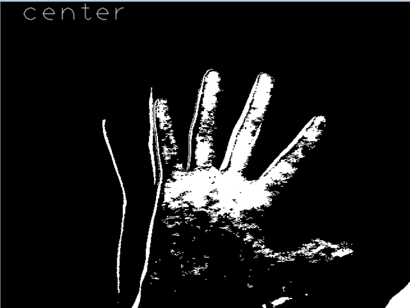
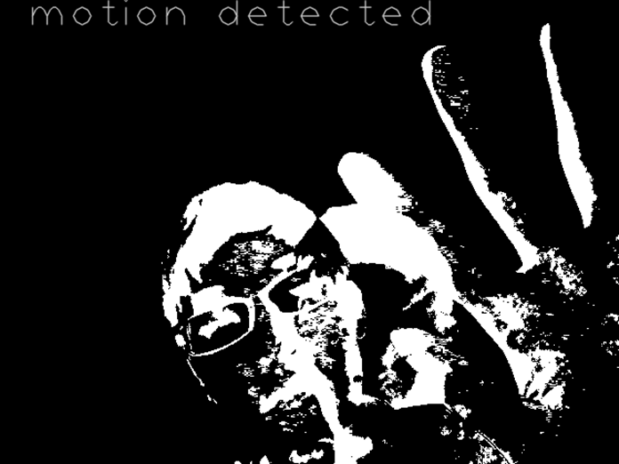
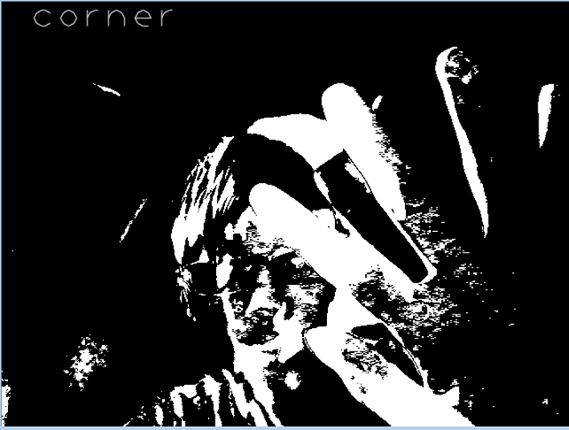
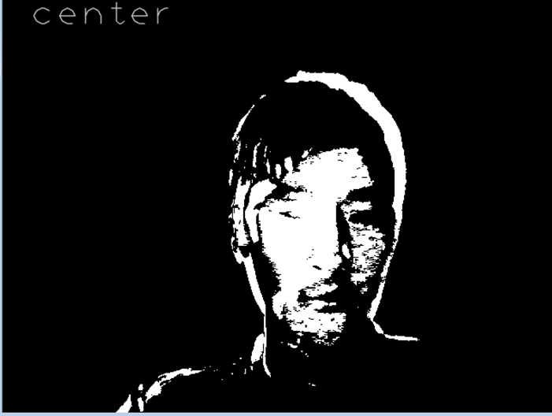
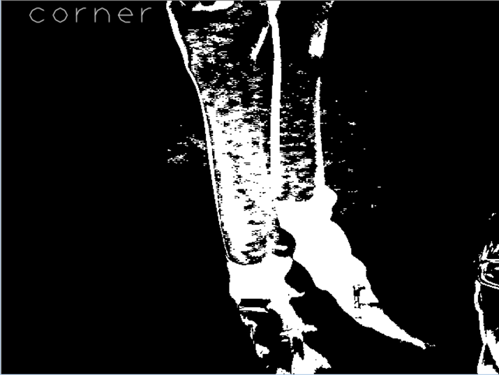

Project 1: Gesture Recognition
CS 440 (Spring 2015)
Ding Jin
Fuqing Wang
2/14/2015
Problem Definition
1.The technical problems including make the VS and openCV works since it our first time to use these tools. I have to admit it really takes time.
2.Skin detection and frame difference which we can used the code from the lab. Differencing the frame is more important in our code.
3. Background subtraction and position tracking. We came up with a “center covered” calculation to solve it.
Method and Implementation
First we took the detected Skin code from our Lab 1. It uses a method in open Cv in which it will try to only detect only things the same color as skin. We also make the full use of the frame difference. It helps narrow down the amount of data when facing multiple frames. We actually came up with a calculation method to compensate the motionenergy method which was provided which we really don’t know how make the use of motionenergy. This method calculate the gray-intensity around the center based the differenced frame.
myMax(),myMin() -- functions that return the maximum or minimum integers, from the lab code.
myFrameDifferening() --function that does frame differencing between the current frame and the previous frame.
Variable: maxVal, maxKey, equalizer, colLength, color_hull -- the variables that helps the center-covered calculation.
Experiments
In We made a few recognition tests. Since we recognize the gesture as the “static” and “movement”, we also focus the motion testing.
Results
Success Results | ||
Trial | Source Image | |
trial 1 Corner static fist gesture |
| |
trial 2 Center static Palm gesture |  | |
trial 3 Waving fast motion test |  | |
Failures results
FaceNegative: Static complex palm and face test. It failed from “motion” to “corner”. It might Because when move slow the corner will be captured. |  |
FacePostive: Static center face test. It is a little bit random... |  |
hand Negative: Static fist center test, it failed from “center” to “corner”. The possible reason will be the corner calculation has the priority In the function, so when center and corner both used, it will make mistakes |  |
Discussion
Our method is able to recognize the gesture very quickly and does not need motion energy since its mechanic is simple. However it can hardly recognize multiple gesture at the same time. I expected to accomplish in this project to find is frame difference and background subtraction can be done at the same time and it works.
I think the potential of this method is that if we set detailed priorities among those gesture and build more pre-set gesture. Is will avoid the mix-up problems when more than one gesture are used.
Conclusions
It was very hard to get the source code to work the way we wanted it to and thus we needed to do more research than before. Our main goal is that we can identify the position of the object in the camera and it can also difference between “static” and “dynamic” object. It has the limitation that it can not recognize the complex hand gesture and multiple gesture at the same time. We can make it better if given m
Credits and Bibliography
openCV manual -- video, video analysis : http://docs.opencv.org/modules/video/doc/video.html
Hand gesture using OpenCV -- http://anikettatipamula.blogspot.ro/2012/02/hand-gesture-using-opencv.html
Hand Tracking And Gesture Detection (OpenCV) -- http://s-ln.in/2013/04/18/hand-tracking-and-gesture-detection-opencv/
Hand detection using openCV -- http://www.andol.info/hci/830.htm
Lab2 code -- http://www.cs.bu.edu/fac/betke/cs440/restricted/lab2/